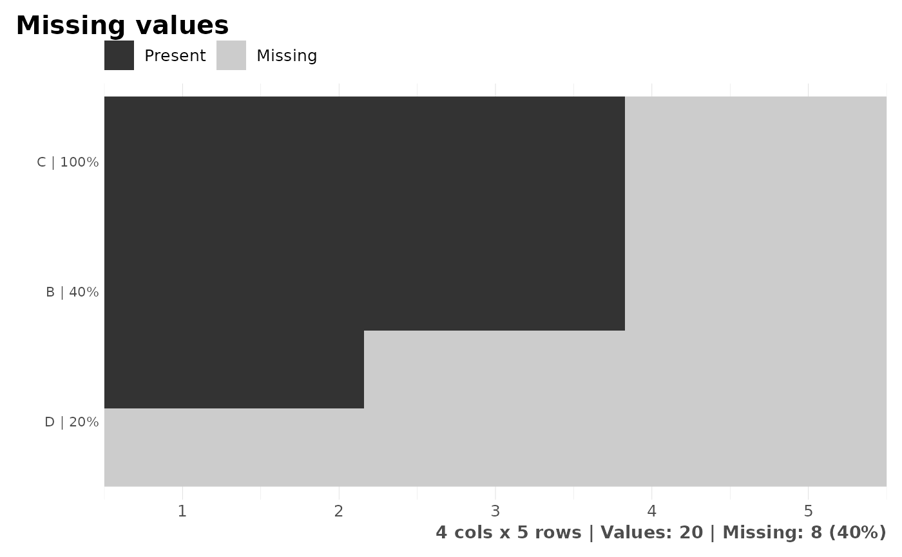
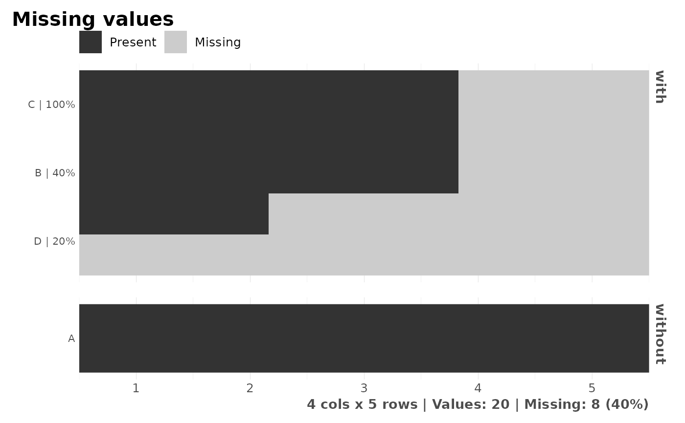

This function lets the user calculate the percentage of NAs or missingness in a data.frame. It also plots the results if needed.
Value
data.frame with each variable, number of missing values and percentage.
If plot=TRUE, a plot with the same information reflected.
See also
Other Exploratory:
corr_cross(),
corr_var(),
crosstab(),
df_str(),
distr(),
freqs(),
freqs_df(),
freqs_list(),
freqs_plot(),
lasso_vars(),
plot_cats(),
plot_df(),
plot_nums(),
tree_var()
Other Missing Values:
impute()
Examples
Sys.unsetenv("LARES_FONT") # Temporal
# Dummy data
df <- data.frame(
A = c(1:5),
B = c(NA, NA, 1, 1, 1),
C = rep(NA, 5),
D = c(NA, LETTERS[1:4])
)
# Missing values summary
missingness(df)
#> variable missing missingness
#> 1 C 5 100
#> 2 B 2 40
#> 3 D 1 20
# Visual results
missingness(df, plot = TRUE)

# Show all variables (including those with no missing values)
missingness(df, plot = TRUE, full = TRUE)
